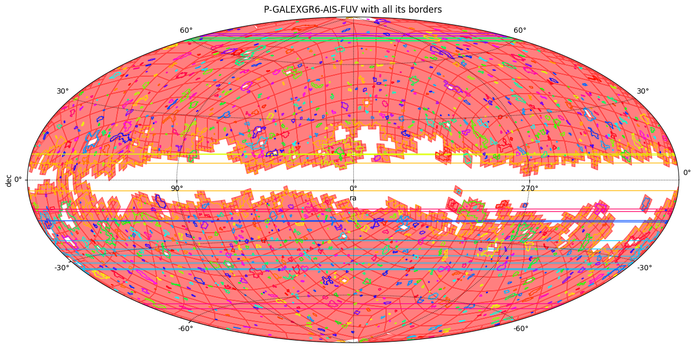

Compute the borders of a MOC¶
[1]:
import astropy.units as u
import matplotlib.pyplot as plt
import numpy as np
from astropy.coordinates import Angle, SkyCoord
from astropy.visualization.wcsaxes.frame import EllipticalFrame
from astropy.wcs.utils import skycoord_to_pixel
from matplotlib.patches import PathPatch
from matplotlib.path import Path
from mocpy import MOC, WCS
[2]:
order = 7
fits_path = "../resources/P-GALEXGR6-AIS-FUV.fits"
moc = MOC.from_fits(fits_path)
moc = moc.degrade_to_order(order)
WARNING: Wrong depth_max 29. Reset to 13
[3]:
%%time
# Computing time is related to the number of ipixels located in borders of the MOC.
# GALEX has a lot of holes and therefore there are a lot of ipixels lying in its border.
# It's especially true for deeper orders.
# The step taking the most of time is the construction of the graph from the coordinates of the ipixels
# lying in the border of all the dissociated MOC components.
# For the purpose of the demo we reduce the order of GALEX from 8 to 7
boundaries_l = moc.get_boundaries()
<timed exec>:9: DeprecationWarning: This method is not stable. A future more stable algorithm will be implemented!
/home/manon.marchand/.conda/envs/mocpy-dev/lib/python3.12/site-packages/astropy_healpix/core.py:659: RuntimeWarning: invalid value encountered in neighbours_nested
return np.stack(func(healpix_index, nside))
CPU times: user 890 ms, sys: 21.3 ms, total: 911 ms
Wall time: 910 ms
[4]:
def get_cmap(n, name="hsv"):
"""Return a colormap.
This function maps each index in 0, 1, ..., n-1 to a distinct
RGB color; the keyword argument name must be a standard matplotlib
colormap name.
"""
return plt.get_cmap(name, n)
def add_patch_path(ax, wcs, coords, **kw_mpl_pathpatch):
"""Define a custom implementation of ``MOC.fill()``."""
xp, yp = skycoord_to_pixel(coords=coords, wcs=wcs)
xp = xp.flatten()
yp = yp.flatten()
codes = np.ones(shape=(xp.shape[0] + 1,)) * Path.LINETO
codes[0] = Path.MOVETO
codes[-1] = Path.CLOSEPOLY
vertices = np.vstack((xp, yp)).T.tolist()
vertices.append(vertices[0])
path = Path(vertices, codes)
patch = PathPatch(path, **kw_mpl_pathpatch)
ax.add_patch(patch)
[7]:
fig = plt.figure(111, figsize=(16, 8))
cmap = get_cmap(100)
with WCS(
fig,
fov=160 * u.deg,
center=SkyCoord(0, 0, unit="deg", frame="galactic"),
coordsys="galactic",
rotation=Angle(0, u.degree),
projection="AIT",
) as wcs:
ax = fig.add_subplot(111, projection=wcs, frame_class=EllipticalFrame)
moc.fill(ax=ax, wcs=wcs, alpha=0.5, fill=True, color="r")
# Draw the borders, each plotted in a different color.
for border_coords in boundaries_l:
add_patch_path(
ax=ax,
wcs=wcs,
coords=border_coords,
fill=False,
color=cmap(np.random.randint(100)),
)
plt.xlabel("ra")
plt.ylabel("dec")
plt.title("P-GALEXGR6-AIS-FUV with all its borders")
plt.grid(color="black", linestyle="dotted")
# The lines cutting the MOC are borders passing from the extreme east to the extreme west of the projection
plt.show()
